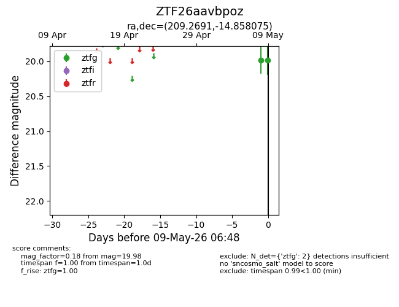
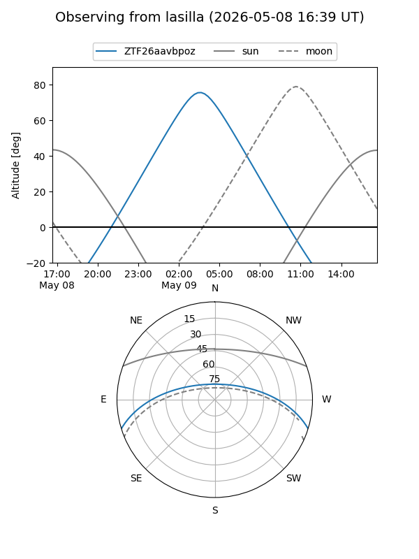
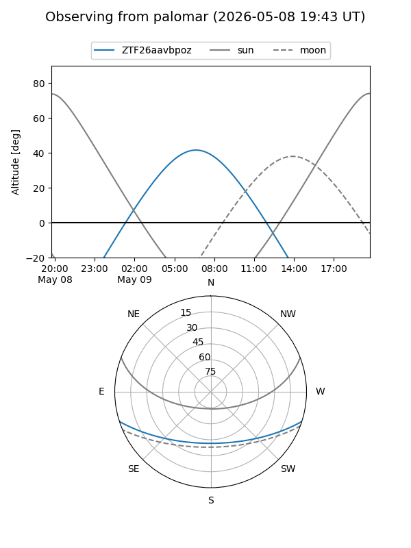

ZTF26aavbpoz
Target ZTF26aavbpoz at 2026-05-09 06:49
Aliases and brokers:
FINK: link
Lasair: link
ALeRCE: link
alt names
ZTF26aavbpoz (ztf,fink_ztf)
Coordinates:
equatorial (ra, dec) = 209.2691,-14.85807
equatorial (HMS+DMS) = 13:57:04.58,-14:51:29.07
galactic (l, b) = (325.6871,+45.09388)
Flags:
Photometry:
last ztfg=19.98
2 ztfg detections
Lightcurve

Visibility


Additional plots